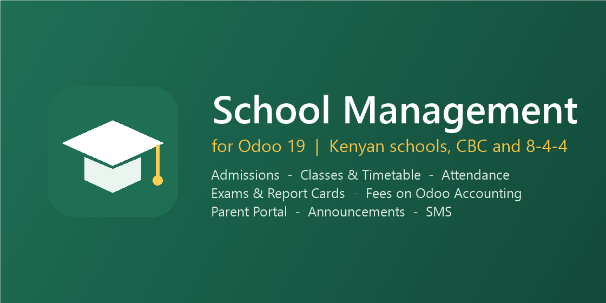

Run the whole school year in Odoo: enrol students, plan classes and timetables, take attendance, record exams and publish report cards, invoice fees through Odoo Accounting, and keep parents informed on the parent portal, by email and by SMS.

SMS use Odoo's standard SMS service. Optional add-ons from the same author send SMS through local gateways (SMS Gateways) and match M-Pesa Paybill payments to students (School M-Pesa Fee Payments).
Questions, setup help or custom work: support@livecrib.pro